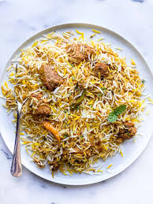

Easy chicken biryani
Ingredients
2 cups basmati rice, 500g chicken, 1 cup yogurt, 2 onions, 2 tomatoes, 2 tsp ginger-garlic paste, 1 tsp turmeric, 2 tsp red chili powder, 2 tsp biryani masala, 4 cups water, 3 tbsp oil/ghee, fresh coriander & mint, salt
Process to make
- rinse & soak rice 30 min.
- fry onions until golden, set aside.
- cook chicken with yogurt, spices & tomatoes until tender.
- boil rice 70% done.
- layer rice over chicken, top with fried onions, mint & coriander.
- cover & cook on low heat 15–20 min (dum).
- mix gently and serve hot.

Kaju Katli
Ingredients
2 cups cashews, 1 cup sugar, 1/2 cup water, 1 tbsp ghee, 1/2 tsp cardamom powder, silver vark (optional)
Process to make
- grind cashews into a fine powder (don’t over-blend).
- make sugar syrup with sugar & water, 1-string consistency.
- add cashew powder, stir continuously on low flame.
- cook until soft dough forms, add ghee & cardamom powder.
- transfer onto greased plate, knead slightly while warm.
- roll flat with a rolling pin, apply silver vark if using.
- cut into diamond shapes, cool completely & serve.